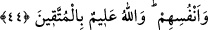

faziletli ameller yapmalı ve Allah yolunda cihad etmelidir.
Şakik (Belhî) demiştir ki: Allah Teâlâ bu dîni diğer dinlere üstün kılmıştır.
Üstünlüğünü de cihadla gerçekleştirmiştir. Kim yaşadığı zamandaki cihaddan nasîbini
alırsa, daha önce yapılmış olan bütün savaşları müşâhade eden ve onlara iştirak eden
kimse gibi olur. Kim de yaşadığı zamandaki cihaddan geri durursa, Rasûlullah’ın (s.a.)
katıldığı savaşlardan geri kalan kimselerin günahlarına ve utançlarına ortak olmuş olur.
Ağır davranmak ve geri durmak bedene ait tabiî bir tembelliktir. Rûhâniyetten nasibi
olan kişi, kendisinde hayırlı işlere koşturma gayreti bulur.
Mesnevî’de denilir ki:
Her ağırlık ve yorgunluk tendendir
Can ise hafifliğinden dolayı hep uçmaktadır
Ey Allah’ım, din konusunda bizi tembellikten koru. Bize yardım et. Çünkü gerçek
yardımcı ancak sensin.
44. Allah’a ve âhiret gününe inananlar, mallarıyla ve canlarıyla cihad etmek(ten
geri kalmak) için senden izin istemezler. Allah, takvâ sahiplerini pek iyi bilir.
“Allah’a ve âhiret gününe inananlar, mallarıyla ve canlarıyla cihad etmek” ten geri
kalmak “için senden izin istemezler.” Halis olanlar geri kalma konusunda izin istemek
bir yana, izni beklemeden hemen cihada koşarlar. Geri kalma konusunda izin
isteyenlerin, işlerinde teennî ile hareket ettikleri zannedilebilir, bilakis onların bu
davranışları iki yüzlülüklerine (nifak) delildir. “Bir hükmü bir vasfa bağlamak, o vasfın
o hükme illet olduğunu gösterir.” kâidesine binâen izin istememenin illeti imandır,
(mazeretsiz) izin istemenin illeti ise imansızlıktır.
“Allah takva sahiplerini pek iyi bilir”. Bu ifade, savaştan geri kalmak için izin
istemeyenlerin takvâ ehli arasındaki yerlerini aldıklarına şehadet etmekte, onlara pek
çok menfaatlar vaadetmekte ve onlardan sâdır olan bu hareketin sahip oldukları
takvâdan kaynaklandığını bildirmektedir.